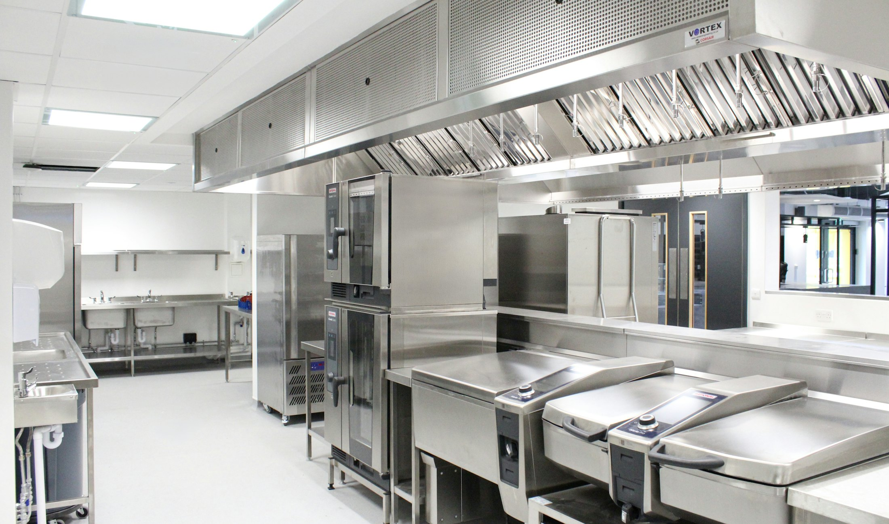
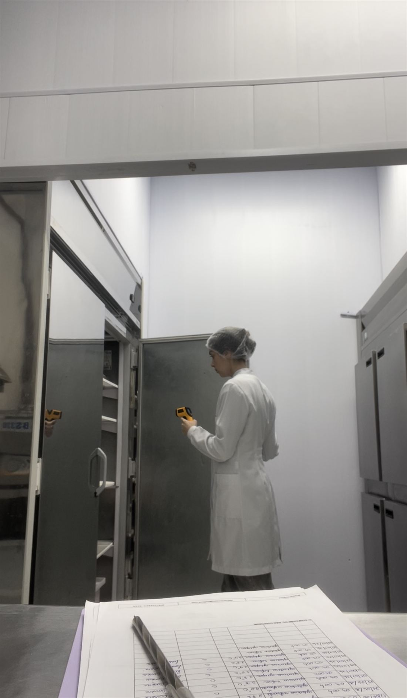
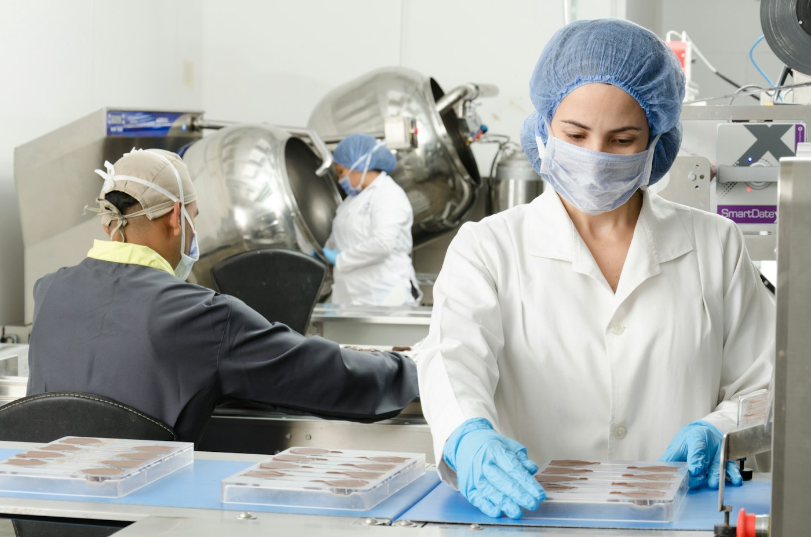
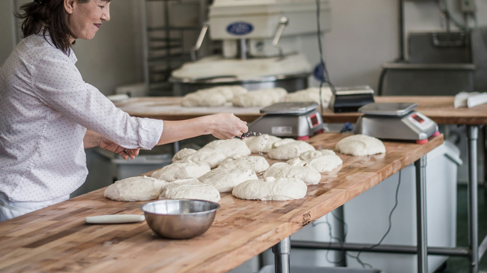

Assessoria e consultoria em segurança dos alimentos
Avaliação da rotina, identificação de pontos de atenção, orientação da equipe, suporte técnico e acompanhamento conforme a necessidade do estabelecimento.

Consultoria e responsabilidade técnica, com soluções personalizadas para a realidade de cada estabelecimento em Balneário Camboriú e região.

Sou Lara Corsini, médica veterinária, com atuação em segurança dos alimentos.
Meu trabalho é auxiliar estabelecimentos e indústrias de alimentos a atender às exigências sanitárias, organizar seus processos e implementar boas práticas de forma adequada à sua realidade.
Para isso, começo entendendo o funcionamento do estabelecimento, sua rotina e suas principais necessidades. A partir dessa avaliação, identifico os pontos que precisam ser ajustados e desenvolvo as orientações e soluções necessárias, que podem envolver documentação, estrutura, armazenamento, manipulação, higiene, treinamentos e acompanhamento dos processos.
Mais do que apontar o que precisa ser melhorado, meu objetivo é orientar a equipe e dar suporte para que as adequações realmente sejam colocadas em prática.

Serviços
Avaliação da rotina, identificação de pontos de atenção, orientação da equipe, suporte técnico e acompanhamento conforme a necessidade do estabelecimento.
Avaliação de documentação, estrutura, armazenamento, manipulação, higiene e demais aspectos relacionados à segurança dos alimentos.
Treinamento de Boas Práticas de Manipulação e outros treinamentos conforme a necessidade identificada no estabelecimento.
Atuação como RT conforme as características, atividade e necessidades do estabelecimento.
Orientação técnica relacionada às atividades com produtos de origem animal, conforme a realidade e o serviço de inspeção aplicável.
Orientação e adequação de rótulos conforme as características e exigências aplicáveis ao produto.

Primeiro, conversamos para entender o estabelecimento, a atividade desenvolvida e qual é a principal necessidade ou dificuldade.
Quando necessário, realizo uma visita inicial para conhecer a realidade do estabelecimento e observar sua rotina.
Na visita, posso avaliar documentação, estrutura, armazenamento, manipulação, higiene, processos e rotina da equipe, conforme o objetivo do trabalho.
A partir do que foi identificado, oriento o responsável e a equipe sobre o que precisa ser ajustado e quais são os próximos passos.
Conforme o serviço contratado, desenvolvo documentos, realizo treinamentos, acompanho as adequações e ofereço suporte técnico.
Cada projeto é construído de acordo com a realidade e a necessidade do estabelecimento.
Base em Balneário Camboriú, com atendimento presencial em cidades da região, como Blumenau, Itajaí, Camboriú, Itapema, Porto Belo, Bombinhas e outras localidades próximas.
Alguns serviços também podem ser realizados online, especialmente demandas de documentação, orientação e suporte técnico.
A possibilidade de atendimento presencial em outras localidades pode ser avaliada conforme o projeto.
Dúvidas frequentes
Não encontrou sua pergunta? Mande uma mensagem e eu respondo.
Primeiro, entendo o estabelecimento, sua atividade e a principal necessidade. A partir disso, avaliamos qual tipo de serviço faz sentido para o caso.
A visita inicial tem como objetivo conhecer a operação e avaliar os pontos relacionados ao serviço contratado. Dependendo da demanda, podem ser observados documentação, estrutura, armazenamento, manipulação, higiene e rotina da equipe.
Não necessariamente. O serviço é personalizado e pode ser pontual ou contínuo, de acordo com a necessidade do estabelecimento.
Não. O trabalho pode envolver avaliação da rotina, adequação sanitária, documentação, orientação da equipe, treinamentos e suporte técnico.
O treinamento de Boas Práticas de Manipulação é uma das possibilidades. Outros treinamentos podem ser desenvolvidos conforme as necessidades identificadas no estabelecimento.
Sim. Alguns serviços, especialmente documentação, orientações e suporte técnico, podem ser realizados de forma online. A necessidade de visita presencial é avaliada conforme cada projeto.
Sim. Realizo atendimentos em cidades da região. Para outras localidades, entre em contato para avaliarmos a possibilidade.
Conte um pouco sobre a sua operação e o que você precisa. Vamos entender juntos qual solução faz sentido para a sua realidade.